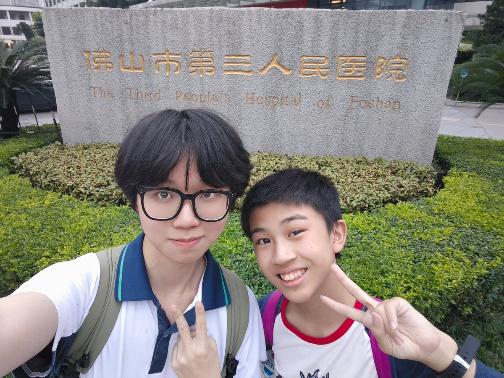
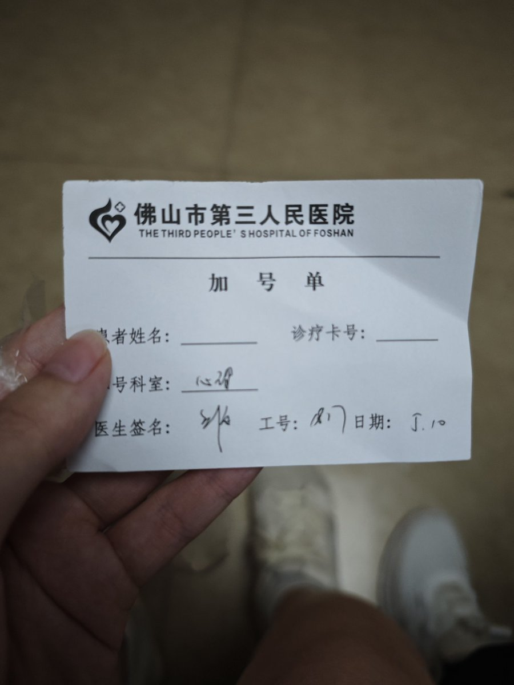
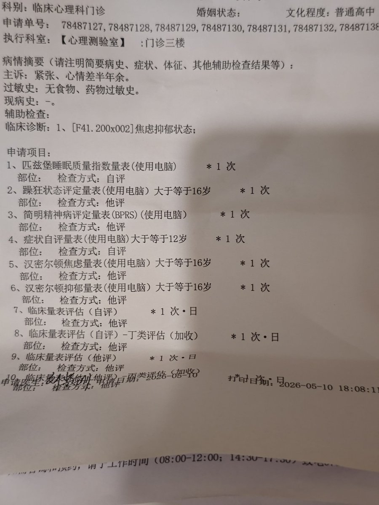

RT @kiki_qiqing: 今天祈晴也是和捌酱 @CCA8798 一起勇闯佛山精卫了🤓，14岁带18岁看精卫这块)。。本来想着高考后直接去挑战贾艳滨来着。。不过躯体化连炸一个星期没招了，废了好多力气才请到假，然后没号了也是刘杏莲医生给我好心加了号😭😭，然后明天也是一大堆检…




今天祈晴也是和捌酱 @CCA8798 一起勇闯佛山精卫了🤓，14岁带18岁看精卫这块)。。本来想着高考后直接去挑战贾艳滨来着。。不过躯体化连炸一个星期没招了，废了好多力气才请到假，然后没号了也是刘杏莲医生给我好心加了号😭😭，然后明天也是一大堆检查。。依旧捌酱陪护窝，祝我顺利吧🥺 https://t.co/vmixBWOslG